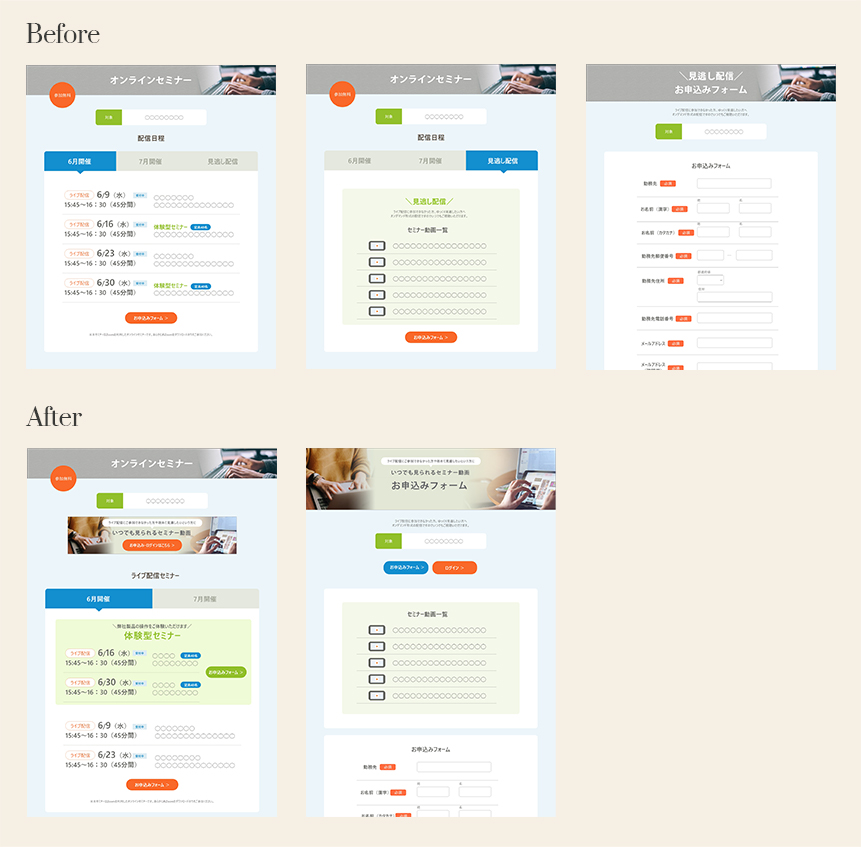

Works

- Overview
- Webinar for teachers
- Purpose
- Introduce how to use our software and gain market share at school.
- Target
- Teachers, School boards
- Team
- 9 people（Management 4, Designer 1, Contents Planning 4）
- My Work
- Examination of application flow, UI improvement and e-mail newsletters creation
- Before
-
- ・
- You can switch between live and on-demand seminars in tabs, but it's hard to tell the difference them.
- ・
- 2 clicks are required to go to the application page for the on-demand seminar.
- ・
- One of the seminars has a fixed capacity and we want to fill it as soon as possible.
- After
-
- ・
- On-demand seminars are displayed as a banner.
- ・
- You can go from the top page to the application page with 1 click.
- ・
- Seminars with capacity is displayed at the top with colors. And the application buttons are separated.